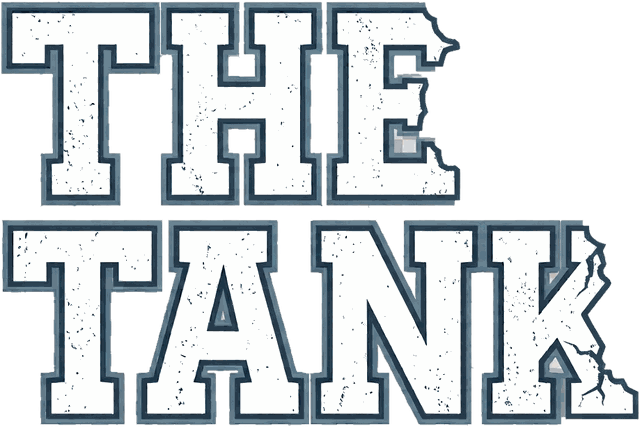

THE TANKPitch any idea, product, or project. Good idea or bad idea, and why, with no pricing or margins required. Five sharks weigh in one at a time, each with their own take and their own offer on the table. Four of them want you to win. One of them takes some convincing.
Any idea, product, or pitch. For entertainment and brainstorming, not professional advice.